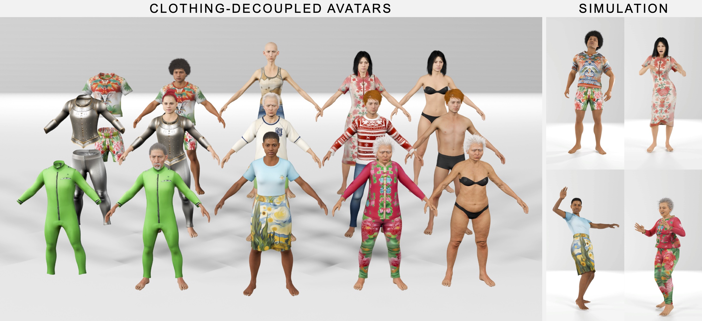

Creating detailed 3D human avatars with garments typically requires specialized expertise and labor-intensive processes. Although recent advances in generative AI have enabled text-to-3D human/clothing generation, current methods fall short in offering accessible, integrated pipelines for producing ready-to-use clothed avatars. To solve this, we introduce Tailor, an integrated text-to-avatar system that generates high-fidelity, customizable 3D humans with simulation-ready garments. Our system includes a three-stage pipeline. We first employ a large language model to interpret textual descriptions into parameterized body shapes and semantically matched garment templates. Next, we develop topology-preserving deformation with novel geometric losses to adapt garments precisely to body geometries. Furthermore, an enhanced texture diffusion module with a symmetric local attention mechanism ensures both view consistency and photorealistic details. Quantitative and qualitative evaluations demonstrate that Tailor outperforms existing SoTA methods in terms of fidelity, usability, and diversity. Code will be available for academic use.
Tailor includes a three-stage pipeline. Given a description of a clothed human, (a) the LLM agent decomposes the prompt into body and garment sub-prompts, and outputs the translated body parameters and garment templates. The body parameters and garment templates are then fed into the HumGen3D generator to derive highly-detailed human model and a set of roughly-aligned garments. (b) We adopt topology-preserving deformation to the garment template under the guidance of both a text-to-image model and geometry losses to generate body-aligned clothes. (c) We condition a multi-view image diffusion model with rendered depth images and generate view-consistent images. Then, we sample texture from the images and apply a refinement process to get the final texture map.
An Iron Man upper body armor, red and gold color scheme, with a round blue arc reactor at the chest
A cropped tank top with the texture of light orange color with white cute flowers
A Hawaiian T-shirt
An orange puffer jacket
A pair of Hawaiian shorts with floral patterns
A pair of blue denim jeans
A sleeveless dress with a square neckline and wide shoulder straps, leopard print
A traditional royal style dress in blue and gold
A Qipao (Cheongsam) with beautiful floral patterns
A knee-length office skirt with Van-Gogh print
A medieval armor
A Spider-Man bodysuit costume
@misc{sun2025tailor,
title={Tailor: An Integrated Text-Driven CG-Ready Human and Garment Generation System},
author={Zhiyao Sun and Yu-Hui Wen and Matthieu Lin and Ho-Jui Fang and Sheng Ye and Tian Lv and Yong-Jin Liu},
year={2025},
eprint={2503.12052},
archivePrefix={arXiv},
primaryClass={cs.CV}
}